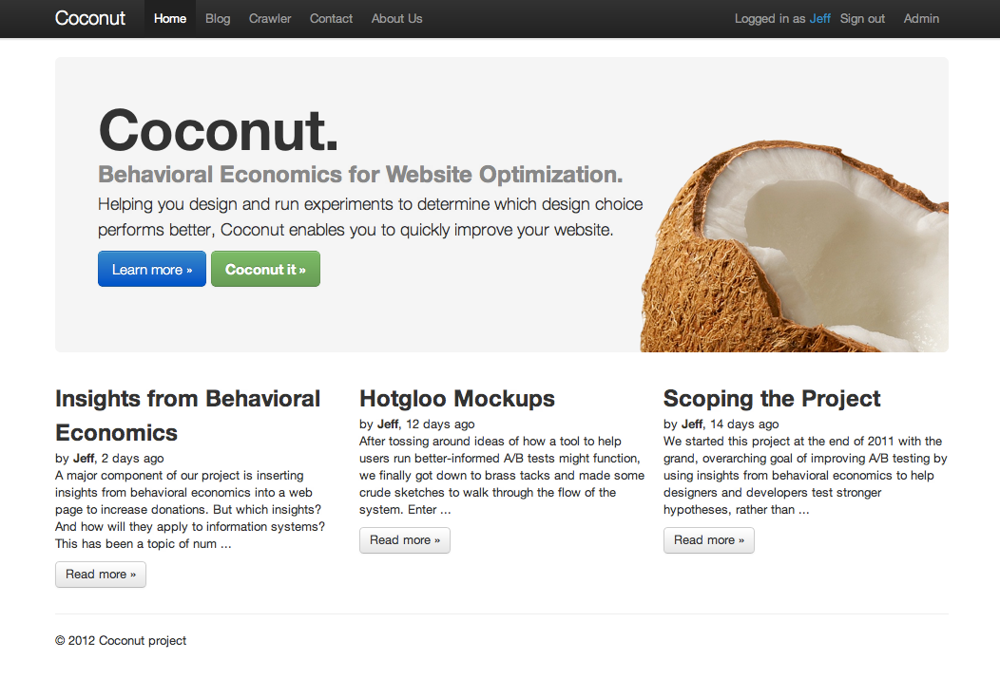

Final Project — Coconut App
This is my masters thesis work, which has the goal of helping designers and developers run better A/B tests by applying insights from behavioral economics. It is currently being developed. Follow our progress on the project’s homepage and blog, coconutapp.herokuapp.com. Read the full abstract below.
In recent years A/B testing has become a powerful tool to test the efficacy of user interfaces. By running experiments to determine which design choice (e.g. blue or red buttons, bold or italic fonts) performs better, organizations are able to quickly improve their websites. However, much of the testing being done has no strong hypotheses about why a particular change will be effective in achieving the goals of the website, converging on a local maximum rather than achieving their full potential. Current tools do not assist in suggesting what would be valuable for testing nor do they aggregate findings across multiple websites.
This problem exists across a wide variety of website categories, for the scope of this project, however, we chose to focus on non-profits. Our project aims at improving the impact of non-profit websites who use A/B testing. The clear conversion goal of online monetary donations in the non-profit sector allows for focused improvements. Our tool will work in conjunction with existing A/B testing platforms and provide suggestions of relevant website modifications to test. Our suggestion engine is built using major findings of the behavioral economics and social psychology literature.